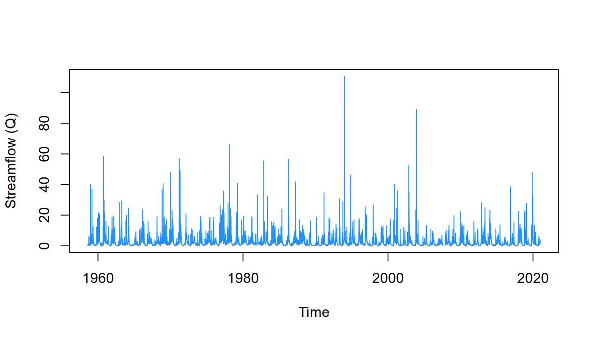
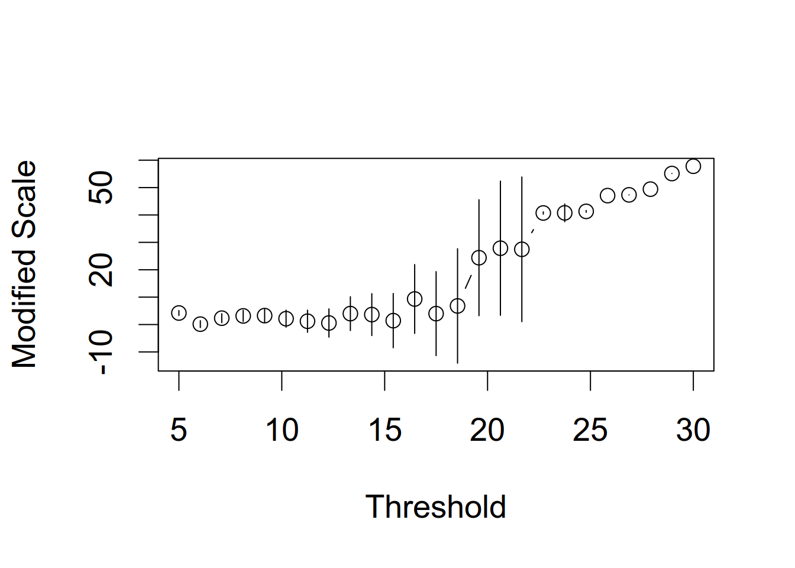
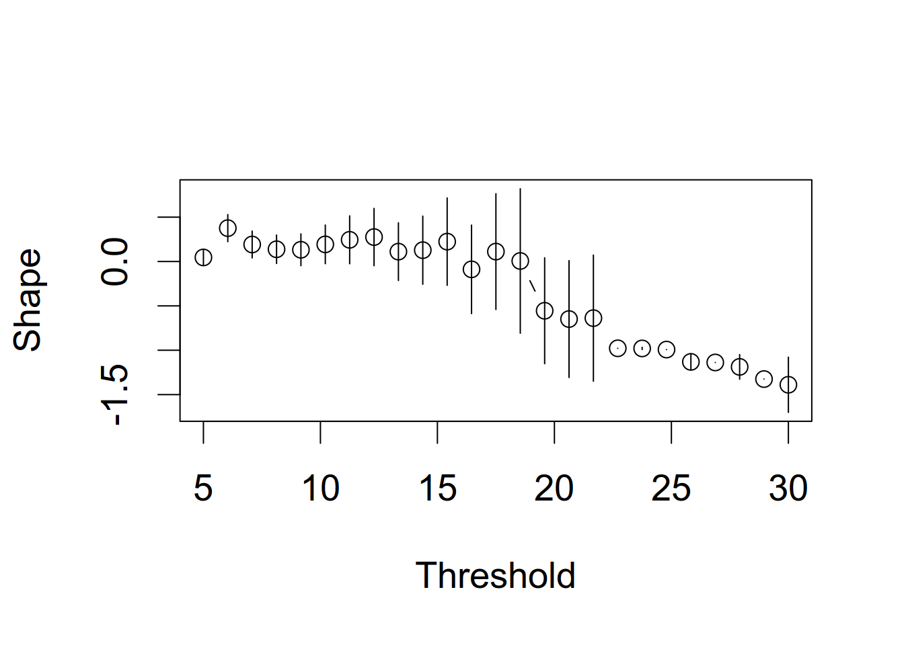
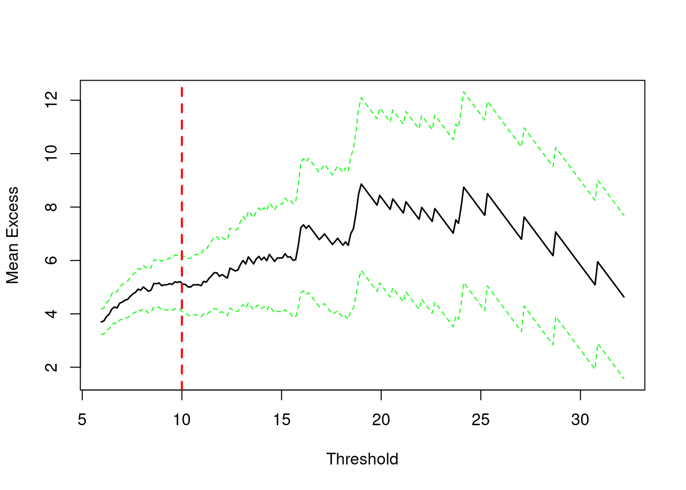
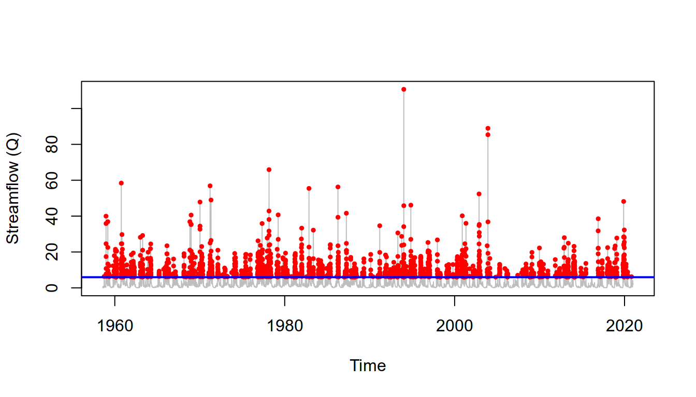
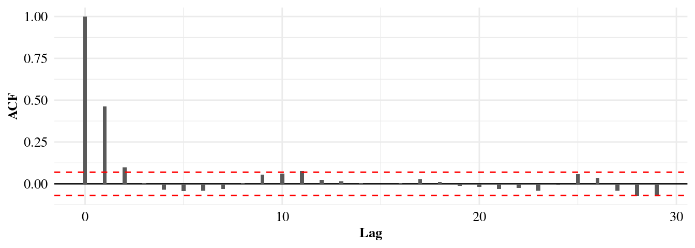
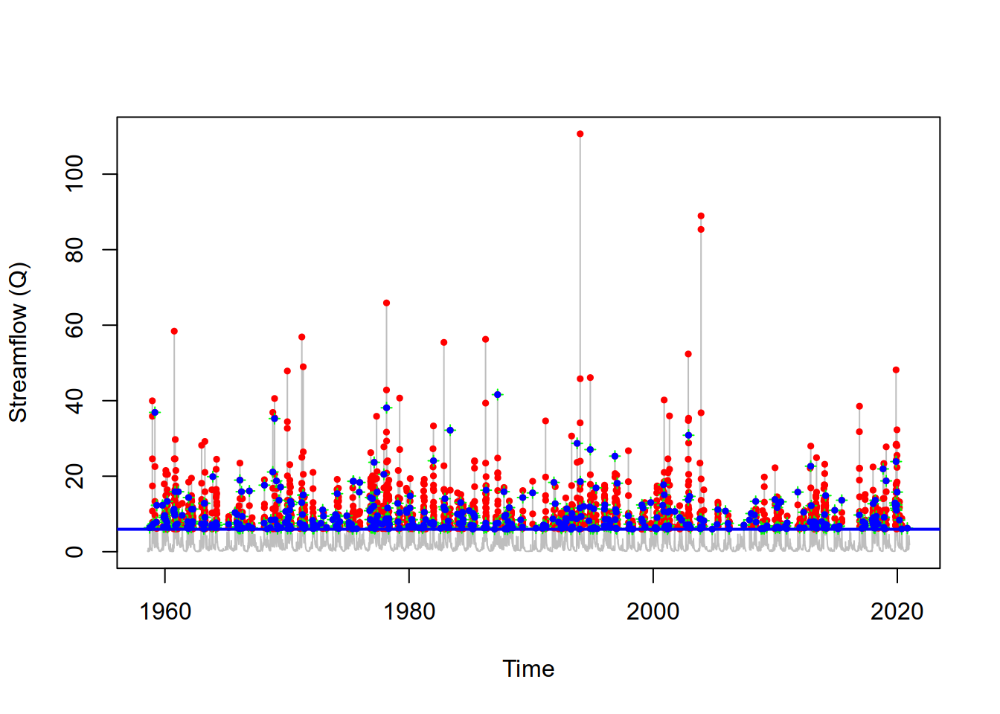
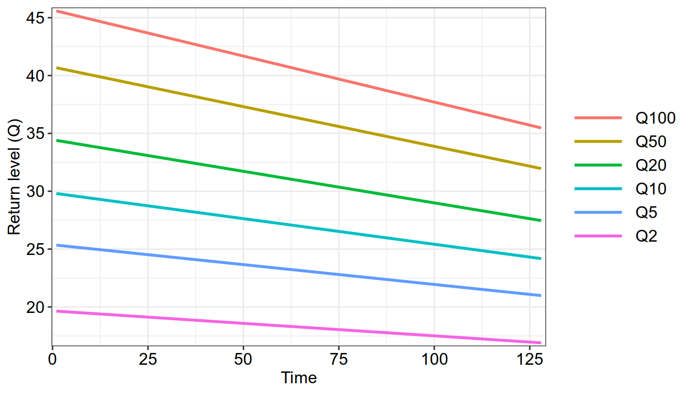

library(dplyr)
library(tidyr)
library(ggplot2)
library(lubridate)
library(trend)
library(extRemes)Peaks-Over-Threshold (POT) Modelling
1 Libraries
2 The threshold exceedance method
The threshold exceedance method, often referred to as the peaks over threshold (POT), is based on the Pickands–Balkema–de Haan Theorem, sometimes referred to as the extreme value theorem (EVT) II. EVT II states that for a wide class of underlying distributions, the distribution of excesses above a sufficiently high threshold converges to the Generalized Pareto Distribution (GPD). The POT approach remains relatively under-employed, largely due to the practical complexities involved in its implementation.
Unlike block maxima approach, POT method is independent of time and instead relies on selecting a cumulative probability level, where data points falling below this threshold are excluded, while values above it are retained for analysis. As in the block maxima method, the data are assumed to be independent, so careful extraction of peaks is essential.
Note
For shorter time series, POT approach would be preferable since it allows to use a larger portion of the data, leading to lower uncertainty in estimates. Unlike block maxima method, which retains only the largest annual flood (not always extreme!), the POT method ensures that all significant flood events are included, even if several occur in the same year.
3 Generalized Pareto (GP) distribution
GP is a continuous two parameters probability distribution used to model exceedances over a high threshold, often referred to as partial duration series (PDS). The cumulative distribution function (CDF) of the GP distribution is given below, where x is the data, \alpha > 0 is the scale parameter, k is the shape parameter, and q0 the threshold.
F(x) = \begin{cases} 1 - \exp\left( -\dfrac{x - q0}{\alpha} \right) & \text{if } k = 0 \\[10pt] 1 - \left( 1 + k \dfrac{(x - q0)}{\alpha} \right)^{-1/k} & \text{if } k \ne 0 \end{cases} \tag{1}
4 Data import
Will work with the same data used in the block maxima section, from the La Drôme à Luc-en-Diois station in France.
filename = './data/discharge.csv'
Qdata = read.csv(filename, col.names = c("Year", "Month", "Day", "Q"))
# construct time serie
Qdata$Date = paste(Qdata[["Year"]], Qdata[["Month"]], Qdata[["Day"]], sep="-")
Qdata$Date = ymd(Qdata$Date)
# final time serie
Qdata = Qdata[, c("Date", "Q")]| Date | Q | |
|---|---|---|
| 22794 | 2020-12-26 | 2.326204 |
| 22795 | 2020-12-27 | 2.173519 |
| 22796 | 2020-12-28 | 2.193727 |
| 22797 | 2020-12-29 | 2.090440 |
| 22798 | 2020-12-30 | 1.966944 |
| 22799 | 2020-12-31 | 1.854676 |

5 Choice of the appropriate threshold
Choosing the appropriate threshold involves balancing bias and variance: setting it lower provides more data but risks introducing bias, whereas setting it too high reduces the data available, increasing uncertainty (Gilleland & Katz, 2016). Like choosing block size in the Block Maxima method, selecting a threshold in the POT approach aims to capture true extremes, while maintaining sufficient data for robust analysis. Even if several methods to select the threshold are available in the litterature, it is still a subjective task. The most common practice is to use graphical methods (Coles, 2001).
Note
Interpreting these plots often requires a certain degree of subjective judgment, as clear-cut decisions about threshold suitability are rarely evident.
Note
The threshold process can be automated (see Solari et al. (2017)) for details.
One way to perform threshold selection, is a focused analysis within an specfic interval. Gilleland & Katz (2016) proposes a procedure, implemented in the {extRemes} ecosystem, that repeatedly fits the GP distribution to the data across a sequence of threshold values, while also providing measures of variability. The idea, as they stated in their tutorial, is to identify the lowest threshold above which the fitted model remains stable, meaning that increasing the threshold further does not significantly change the results, apart from expected variation within the uncertainty bounds.
Note
The {extRemes} library provides the mrlplot(...) function to produce the MRL plot.
x = Qdata$Q
threshrange.plot(x, r = c(5, 30), nint=25, na.action=na.omit, set.panels=FALSE)Figure 2 illustrates how the shape and modified scale parameters of the GP distribution evolve across a range of threshold values. The parameters appear to stabilize around a threshold of 10, while higher thresholds (from 15) exhibit increased variability, likely due to the decreasing number of exceedances.


Another most widely used graphical tools: the Mean Residual Life (MRL) plot. MRL is based on the theoretical mean of the GP (Ribatet, 2011), and helps assess the adequacy of a threshold for GP distribution modeling. The MRL plot displays the average excess over a range of thresholds, defined as the mean of the exceedances above a given threshold q. If the exceedances above a certain threshold follow a GP distribution, the MRL function should appear approximately linear beyond that point (see Gilleland & Katz (2016) for details). Thus, identifying a linear region in the plot guide the selection of a suitable threshold. Despite its simplicity, the MRL plot provides a useful diagnostic to balance threshold stability and GP distribution fit (cf. Coles (2001), Section 4.3.1).
Note
The {extRemes} library provides the mrlplot(...) function to produce the MRL plot.
For diagnosing an appropriate choice, the chunk above produces the MRL plot with a 95% confidence intervals (CIs). CIs are based on the normal df for the mean excesses. The MRL plot is expected to exhibit approximately linear behavior above a suitable threshold (Coles, 2001). As shown in Figure 3, the threshold q = 10 appears appropriate, since the linearity assumption is reasonably satisfied beyond this point.
x = Qdata$Q
mrlplot(x, na.action=na.omit)
abline(v = 10, col = "red", lty = 2, lwd = 2) # Vertical line at q = 10

6 Threshold exceedances (POT) sampling
We need to extract all exceedances above the threshold for further analysis. Figure 4 show daily streamflow time serie with all exceedances above the threshold.
# extract all flow values above the threshold and sort by date
thres = 10
all_exceedances = Qdata |>
filter(Q > thres) |>
arrange(Date)

The correlogram (Figure 5) shows that the extracted peaks are autocorrelated for lag 1 and 2. This reflects dependence between consecutive peaks, and even one time step apart, values still influence each other.

Note
This is expected, as peaks are likely to be close to each — i.e., a peak is often followed by another peak of similar magnitude within the next 1–2 time steps.
We can confirm the dependance of the threshold exceedances with the Wald-Wolfowitz independence test (Wald & Wolfowitz, 1940) (see autocorrelation section) performed with the chunk below. The test summary indicates that the data are highly autocorrelated, whith a very low p-value (< 2.2e-16), supporting the rejection, with high confidence, of the null hyposthesis that the data are independent.
Wald-Wolfowitz test for independence and stationarity
data: x
z = 13.377, n = 800, p-value < 2.2e-16
alternative hypothesis: The series is significantly different from
independence and stationarity7 Declustering
The naive selection of events above a specfic threshold may lead to dependent (or auto-correlated) events. It’s important that the exceedances over the threshold are independent because extreme value theory assumes each event is separate and not part of the same physical phenomenon (like one long flood event). However, floods and other hydrological extremes often occur in clusters due to persistent weather systems. To ensure independence, a process called de-clustering is often applied after sampling events above the selected threshold.
Note
Declustering is essential for satisfying the independence assumption required by extreme value analysis.
De-clustering is the process of identifying and retaining independent extreme events from a time serie by removing clustered values. A two-rules de-clustering method is commonly applied in the litterature to separate dependent events: (i) time separation rule and (ii) magnitude differential rule (Lang et al., 1999).

Time separation rule:a minimum number of days between successive peaks. This criterion can be computed with the following equation (USWRC, 1975): Ts = 5days + log(A) where A is the catchment area. Let θ represents the minimum number of days between two consecutive peaks:- If θ < Ts →
REJECTthe second peak.
- If θ < Ts →
Note
This time separation rule assumes that larger watersheds require more time for floods to travel through and fully drain from the system.
Magnitude differential rule:flow should drop below a certain fraction of the smaller peak between events. Cunnane (1979) propose the following condition, where X_{min} is the minimum flow value between the two peaks, and (Xs)_1 is the first peak:- If X_{min} > (2/3)(Xs)_1 →
REJECTthe second peak (Xs)_2.
- If X_{min} > (2/3)(Xs)_1 →
Note
Cunnane’s condition assesses whether the flood “drops sufficiently” after the first peak. If it not, it is considered a continuation of the same flood event.
These two rules described above not alternatives to each other, but complementary. That is, both conditions should be satisfied for an event to be considered a separate flood. We will first apply the time separation rule to ensure enough time passes for the basin to drain fully between events, and then the magnitude differential rule to ensures a significant drop in flow indicating a “new flood wave”.
We will decluster our time serie using the threshold value of 10, as identified in Section 5. The Area of the studied catchment is 194 km², as described in the HydroPortail website (here)
We first define a function which takes as arguments the streamflow data, the peak-over-threshold value, and the drainage basin area, performs the temporal declustering technique:
Show the code
#' Select Time-Separated Peaks (De-clustering)
#'
#' Identifies independent flood peaks by applying a minimum time separation rule
#' between exceedances over a given threshold. This is commonly used to de-cluster
#' peaks in the context of Peaks Over Threshold (POT) modeling.
#'
#' @param data A data frame containing at least `Date` and `Flow` columns.
#' @param threshold Numeric. The flow threshold above which a value is considered an exceedance.
#' @param Area Numeric. Catchment Area.
#'
#' @return A data frame of de-clustered peaks (exceedances separated by at least `Ts` days).
time_sep_declust = function(data, threshold, Area)
{
# convert Area from km²to Miles²
A_miles = Area*0.386
# compute the number of days required (Ts)
Ts = ceiling(5 + log(A_miles))
# Filter flow values above the threshold and sort by date
exceedances = data |>
filter(Q > threshold) |>
arrange(Date)
# initialize first exceedance as the first independent peak
kept_peaks = exceedances[1, , drop=FALSE]
last_peak_date = exceedances$Date[1]
# Loop through remaining exceedances to apply the time-separation rule
for (i in 2:nrow(exceedances))
{
current_date = exceedances$Date[i]
if (as.numeric(current_date - last_peak_date) >= Ts) {
kept_peaks = bind_rows(kept_peaks, exceedances[i, , drop=FALSE])
last_peak_date = current_date
}
}
# Return the de-clustered peaks
return(kept_peaks)
}We can now apply our temporal declustering function to the POT serie. The Area of the studied catchment is 194 km², as described in the HydroPortail website (here)
# time separation
peaks_time_declust = time_sep_declust(data=Qdata, threshold=thres, Area=area)
Now, we apply the magnitude diffrential rule to the temporally declustered peaks. To achieve this, we need to define aother function which takes as arguments the temporally declustered data, the the original streamflow data, and the fraction to compute magnitude diffrential, set to 2/3.
Show the code
#' Filter peaks based on intervening flow magnitude
#'
#' This function removes clustered peaks in a time series based on the magnitude
#' difference between consecutive peaks. Specifically, a peak is discarded if
#' the minimum flow between it and the previous peak is greater than a specified
#' fraction (`frac`) of the previous peak's magnitude.
#'
#' @param data A data frame containing temporallydeclustered peaks, with columns `Date` and `Flow`.
#' @param original_data The full original time series with at least `Date` and `Flow` columns.
#' @param frac A numeric value (default is 2/3). A peak is discarded if the minimum
#' flow between it and the previous peak is greater than `frac * previous_peak`.
#'
#' @return A filtered data frame of peaks after magnitude-based declustering.
magnitude_diff_declust = function(data, original_data, frac = 2/3)
{
# Return as-is if there is only one or no peak
if (nrow(data) <= 1) return(data)
# Logical vector to mark which peaks to keep
keep = rep(TRUE, nrow(data))
# Iterate through peaks, comparing each with the previous one
for (i in 2:nrow(data)) {
peak1_date = data$Date[i - 1]
peak2_date = data$Date[i]
# Extract the flow values between two peaks from the full time series
in_between = original_data |>
filter(Date > peak1_date, Date < peak2_date)
# If no data in between, keep the current peak
if (nrow(in_between) == 0) next
# Safely calculate minimum flow in the interval
flows_between = in_between$Flow
flows_between = flows_between[!is.na(flows_between)]
# Skip if no valid flow values between peaks
if (length(flows_between) == 0) next
Xmin = min(flows_between)
Xs1 = data$Flow[i - 1]
# Skip if previous peak flow is NA or missing
if (is.na(Xs1)) next
# Discard current peak if in-between flow is too high
if (Xmin > frac * Xs1) {
keep[i] = FALSE
}
}
# Return only the peaks that meet the magnitude difference criterion
return(data[keep, ])
}Figure 8 show that the additional declustering step after temporal separation rule is not necessary, as the any peak is discarded by this second rule.
# magnitude differential
peaks_final = magnitude_diff_declust(data=peaks_time_declust, original_data=Qdata)

Figure 9 shows the correlogram computed on the declustered peaks. There is no statistically significant autocorrelation beyond lag 0. Thus, the declustered peaks can be considered approximately independent.

To further assess the independence of the declustered peaks, we apply the Wald-Wolfowitz independence test. From the results displayed below, we conclude that the declustering worked well, as we now fall to reject the null hypothesis of independance, with p.value equal to 0.2301.
Wald-Wolfowitz test for independence and stationarity
data: x
z = 1.2001, n = 219, p-value = 0.2301
alternative hypothesis: The series is significantly different from
independence and stationarity8 Trend detection
8.1 Non-parametric approach
As for the block maxima approach (see trend detection section), we can also apply the non-parametric Mann-Kendall trend test for monotonic trend detection. See the Mann-Kendall section for the complete algorithm of the test. In the chunk below, we use the mk.test(...) function from the {trend} library to perform the trend test.
Interpretation
p.value = 0.5059: there is not enough statistical evidence to conclude that a significant trend exists in the threshold exceedances serie.
tau = -3.041649e-02: indicates a weak or no trend.
z = -0.66528: suggests a potential decreasing trend, but the trend is not significant.
# perform Mann-Kendall trend test
mktest = trend::mk.test(x = peaks_final$Q)
print(mktest)
Mann-Kendall trend test
data: peaks_final$Q
z = -0.66528, n = 219, p-value = 0.5059
alternative hypothesis: true S is not equal to 0
sample estimates:
S varS tau
-7.220000e+02 1.174512e+06 -3.041649e-02 The snippet below computes the absolute and relative Sen’s slope, to quantify the magnitude of trend in the POT data as both a raw rate of change and a percentage relative to the mean. See the Sen’s slope section for the complete algorithm and the user-defined function sens_slope_percent(...) we apply below.
# compute Sen's slope as a percentage change
sens_slope_percent(peaks_final$Q)Absolute Sen's slope: -0.0017
P-value: 0.5059
Relative trend rate: -0.01%
Relative Sen’s slope
The threshold exceedances serie show a slight decreasing trend with a slope of -0.0017 rate, which is equivalent to −0.01% relative to its long-term average. Yet, this negative trend is not significative given the p-value of 0.5059.
8.2 Parametric approach with POT modelling
8.2.1 Fit a stationary GP distribution
As we have already seen in the previous section, the GP distribution is the most appropriate distribution to model threshold exceedances. As explained by Gilleland & Katz (2016) in their paper, an important additional consideration when using the POT approach is the rate of exceedance — that is, how often values exceed the chosen threshold. While this rate does not affect the fitting of the GP model itself, it is crucial for calculating return levels, which require scaling the model to real-world time units.
The exceedance rate should be passed the time.units argument in the fevd(...) function. Since our goal is to estimate annual return levels, we must specify the average number of threshold exceedances per year (i.e., the average number of flood events per year in our dataset).
Figure 8 shows that the number of events per year varies — some years experience multiple flood events, while others have none. Therefore, a reasonable approach is to use the empirical average number of exceedances per year over the entire study period as the value for time.units. The snippet below shows how to calculate this rate.
# compute the average number of threshold exceedances per year
peaks_final$year <- year(peaks_final$Date)
n_years <- length(unique(peaks_final$year))
n_events <- nrow(peaks_final)
units <- n_events / n_years
# Optional: print it nicely
cat("Average number of events per year:", round(units, 2), "\n")Average number of events per year: 3.71 Now, we can fit our GP model to the POT data. The workflow is same as the block maxima models (GEV and Gumbel), and same tools can be used to estimates the GP parameters. In the chunk below, we use the {extRemes} library again to fit the GP distribution to our partial duration serie in a statinary context.
# fit the stationary GP distribution to the PDS
library(extRemes)
thres = 10
x = peaks_final$Q
sgp_fit = fevd(x, type="GP", method="GMLE", threshold=thres, time.units = paste0(units,"/year"))
# show summary of the fit
pretty_fit_summary(sgp_fit, "GP")=== GP Fit Summary ===
Estimated Parameters:
scale shape
3.6496 0.3099
Model Fit Criteria:
LogLik: -570.53
Note
The only thing that change here, comared to the block maxima models, is the additional threshold value and the time.units arguments passed to the fevd(...) function, which is the same as the threshold used in the declustering process. The pretty_fit_summary(...) is defined in the block maxima section.
Figure 10 displays the diagnostics from the GP distribution fitted to the partial duration serie: density plot of empirical data and fitted GP df (top-left), and quantiles from a sample drawn from the fitted GP against the empirical data quantiles with 95% confidence bands (top-right).
# show diagnostic plots of the GP distribution fitting
par(mfrow=c(1,2))
plot(sgp_fit, type="density", main="(a) Density plot")
plot(sgp_fit, type="qq2", main=NULL)
title(main="(b) Q-Q plot")
8.2.2 Fit a non-staionary GP distribution
As for the block maxima models, one way to account for non-stationary is to incorporate covariates within the parameters of the distributions in a regression-like manner. To perform parametric trend detection with the GP distribution, we model the scale parameter (σ) as a function of time, transforming the model into a non-stationary GP. The scale parameter of the non-stationnary GP distribution is computed as follow:
\sigma (t) = \sigma 0 + \sigma 1·t \tag{2}
where \sigma is the time-dependant scale parameter of the GP distribution, t is the time index, \sigma 0 is the intercept, and \sigma 1 is the slope.
The chunk below use the {extRemes} library to fit the Non-Stationary GP (NS-GP) distribution to our Partial Duration Serie extracted earlier. Unfortunately, most of the extRemes diagnostic plots currently are not available for non-stationary POT models.
# set threshold
thres = 10
# use time index for non-stationary context fitting
peaks_final$scale_cov = 1:nrow(peaks_final)
# fit the GP distribution to the PDS
PDS = data.frame(peaks_final)
nsgp_fit = fevd(x=Q, scale.fun=~scale_cov, data=PDS, type="GP",
method="GMLE", threshold=thres, time.units=paste0(units,"/year"))
# show summary of the fit
pretty_fit_summary(nsgp_fit, "Non-Stationary GP")=== Non-Stationary GP Fit Summary ===
Estimated Parameters:
sigma0 sigma1 shape
4.1064 -0.0040 0.3066
Model Fit Criteria:
LogLik: -570.21
NS-GP parameters
sigma0 = σ0 = 4.1064: is the intercept of the time-varying GP scale parameter. It represents the base scale of the distribution (often the start of the time series).
sigma1 = σ1 = -0.0040: is the slope of the scale parameter with respect to time. This negative value suggests that extreme values are becoming less variable (narrower tail) over time.
shape = 0.3066: controls the heaviness of the tail of the GP distribution. The positive value (ξ > 0) suggests a heavy (Fréchet) tail (i.e., the probability of very large exceedances decays slowly).
8.2.3 Deviance test
The non-parametric Mann-Kendall test indicates a non-significant trend in the POT values. With parametric methods, the significance of a temporal trend is based on a deviance test between a non-stationary (or more complex) model and a stationary one. The deviance test, or Likelihood Ratio (LR) test, compares two nested models — a simpler (stationary) model and a more complex (non-stationary) model.
The null hypothesis of the deviance test is that the simpler model is sufficient — i.e., no trend (e.g., the GP scale parameter is constant over time). See the Deviance test Section for the mathematical details.
Note
We try just to answer this question: Does the more complex non-stationary GP model provide a significantly better fit to the data than the simpler stationary GP model?
To perform the Deviance test, we can use the lr.test(...) of the {extRemes}. This function just requires the previous fitted objects of class “fevd” from the fevd(...) function:
sgp_fit: model with fewer parameters (stationary GP model)nsgp_fitmodel with more parameters (non-stationary GP model)
# applying the Deviance test
lr.test(x=sgp_fit, y=nsgp_fit, alpha=0.05, df=1)
Likelihood-ratio Test
data: xQ
Likelihood-ratio = 0.64953, chi-square critical value = 3.8415, alpha =
0.0500, Degrees of Freedom = 1.0000, p-value = 0.4203
alternative hypothesis: greater9 Trend analysis conclusions
🔎 Trend Detection Methods Used
- Parametric:
Non-stationary GP modelwith time-varying scale parameter - Non-parametric:
Mann-Kendall test
🚫 No Significant Trend Detected
- Both methods consistently indicate no statistically significant trend in the POT serie.
- The Likelihood Ratio Test showed a high p-value (0.4203), and both the Mann-Kendall test and the Sen’s slope similarly returned a non-significant result, with a p-value of 0.5059 and 0.5059, respectively.
✅ Modeling Implication
- The results support the use of a stationary GP model.
- There is no strong evidence of temporal change in flood extremes over the study period.
10 Flood quantiles estimation
10.1 Stationary context
To estimate return levels for given return periods, we can use the return.level(...) from the {extRemes} package:
Note
The return level is the value expected to be exceeded on average once every T years.
# specific return periods (e.g., 10, 20 years)
rperiods = c(2, 5, 10, 20, 50, 100)
# compute return levels (with 95% confidence intervals)
rlevels = return.level(sgp_fit, return.period=rperiods, do.ci=TRUE)
# print results
print(rlevels)fevd(x = x, threshold = thres, type = "GP", method = "GMLE",
time.units = paste0(units, "/year"))
[1] "Normal Approx."
95% lower CI Estimate 95% upper CI
2-year return level 18.33132 20.14264 21.95396
5-year return level 23.30110 27.34035 31.37960
10-year return level 27.12648 34.31731 41.50814
20-year return level 30.77529 42.96605 55.15681
50-year return level 34.81016 57.65826 80.50637
100-year return level 36.68461 71.89985 107.11510
Note
The sgp_fit object is the object returned by the fevd(...) function when we have fitted a the stationary GP model.
10.2 Non-Stationary context
In non-stationary context, since the scale parameter is time-dependent, return levels have to be calculated for each time step. We refer to this as “effective” return levelsThe same return.level(...) from the {extRemes} package is used to compute "effective" return levels.
Note
The nsgp_fit object is the object returned by the fevd(...) function when we have fitted a the non-stationary GP model.
# specific return periods (e.g., 10, 20 years)
rperiods = c(2, 5, 10, 20, 50, 100)
# compute return levels (with 95% confidence intervals)
rlevels = return.level(nsgp_fit, return.period=rperiods)For easy visualization, we will plot the effective return levels. Lets convert the output of return.level(...) into a clean data.frame :
# Convert estimates to data.frame
df_rlevels <- data.frame(time=1:nrow(peaks_final),
Q2=rlevels[, 1],
Q5=rlevels[, 2],
Q10=rlevels[, 3],
Q20=rlevels[, 4],
Q50=rlevels[, 5],
Q100=rlevels[, 6])
head(df_rlevels) time Q2 Q5 Q10 Q20 Q50 Q100
1 1 21.36000 29.38540 37.14447 46.74100 63.00002 78.71949
2 2 21.34887 29.36640 37.11788 46.70500 62.94809 78.65216
3 3 21.33774 29.34741 37.09128 46.66901 62.89617 78.58484
4 4 21.32661 29.32842 37.06469 46.63301 62.84424 78.51751
5 5 21.31549 29.30943 37.03810 46.59702 62.79232 78.45019
6 6 21.30436 29.29044 37.01150 46.56102 62.74039 78.38286Now, we tranform the data into a long (tidy) format suitable for plotting multiple lines with ggplot:
dataplot = df_rlevels |>
pivot_longer(-1, names_to="RL", values_to="Q") |>
# re-index
mutate(RL = factor(RL, levels=rev(paste0("Q", c(2, 5,10,20,50,100)))))Finally, we plot the effective return levels:
rlplot = dataplot |>
ggplot(aes(x=time, y=Q, color=RL, group=RL)) +
geom_line(linewidth=1) +
scale_x_continuous(expand=c(0.01, 0.01)) +
scale_y_continuous(expand=c(0.01, 0.01)) +
guides(color=guide_legend(keywidth=3)) +
theme_bw() +
theme(legend.text=element_text(size=12),
axis.title=element_text(size=12),
axis.text=element_text(size=12, color="black")) +
labs(x="Time", y="Return level (Q)", color=NULL)
print(rlplot)Figure 11 helps in understanding the variations and trends in flood quantiles across different time periods.”

11 References
Coles, S. (2001). An introduction to statistical modeling of extreme values (p. 208). Springer.
Cunnane, C. (1979). A note on the poisson assumption in partial duration series models. Water Resources Research, 15(2), 489–494.
Gilleland, E., & Katz, R. W. (2016). extRemes 2.0: An extreme value analysis package in R. Journal of Statistical Software, 72(8), 1–39. https://doi.org/10.18637/jss.v072.i08
Lang, M., Ouarda, T. B. M. J., & Bobée, B. (1999). Towards operational guidelines for over-threshold modeling. Journal of Hydrology, 225(3-4), 103–117. https://doi.org/10.1016/S0022-1694(99)00167-5
Ribatet, M. A. (2011). A user guide to the POT package (version 1.4). https://cran.r-project.org/package=POT
Solari, S., Egüen, M., Polo, M. J., & Losada, M. A. (2017). Peaks over threshold (POT): A methodology for automatic threshold estimation using goodness of fit p-value. Water Resour. Res., 53, 2833–2849. https://doi.org/10.1002/2016WR019426
USWRC. (1975). Guidelines for determining flood flow frequency (17). US Water Resources Council, Hydrology Committee.
Wald, A., & Wolfowitz, J. (1940). On a test whether two samples are from the same population. The Annals of Mathematical Statistics, 11(2), 147–162. https://doi.org/10.1214/aoms/1177731909